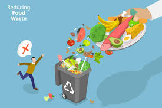

How Individual Can Make a Difference?
People hold essential responsibility to eliminate hunger worldwide. Individuals who take different actions can help establish an environment where every person has enough nutritious food for daily sustenance. Several impactful approaches exist that allow people to make positive changes in hunger reduction efforts.
How You Can Help End Hunger: Actions You Can Take Today
Private involvement stands essential to remove hunger problems. Numerous significant changes can emerge when people volunteer while donating money and advocate for change and organize community events. Participation in this type of work both gives prompt help to hungry people and helps create lasting solutions for food insecurity.

All Saints' Birmingham. (n.d.). Serve the Community Kitchen. Retrieved March 8, 2025, from https://www.allsaintsbhm.org/serve-the-community-kitchen
Volunteering for Hunger Relief
Engaging in food bank or pantry or meal program work with your time and skills makes hunger relief become real. Volunteers at these organizations undertake both raising funds through events and information distribution about food deprivation and food delivery sorting. The implementation of practical community engagement activities ensures necessary support gets to needy individuals while building better connections between neighbors.

Pexels. (n.d.). Volunteer images collection. Retrieved March 8, 2025, from https://www.pexels.com/search/volunteer/
Donating to Food Banks and Charities
The operation of hunger relief organizations depends completely on financial donations and food contributions. The organizations use donor funds to purchase and manage food distribution for needy individuals. To effectively combat hunger organizations need regular financial support as well as donated goods no matter what type of contribution they are.

iStock. (n.d.). Food collection photos. Retrieved March 8, 2025, from https://www.istockphoto.com/photos/food-collection
Advocating for Hunger Solutions
People who practice advocacy work to spread knowledge about hunger causes while influencing governmental decisions to resolve the problem.The collapse of food insecurity requires individuals to teach others while connecting with lawmakers to implement legislation that fights food shortage. Organizations which engage in advocacy work to extend hunger victims' voices through their platforms while pushing lasting hunger resolution initiatives.

iStock. (n.d.). Africa hunger photos. Retrieved March 8, 2025, from https://www.istockphoto.com/photos/africa-hunger
Hosting Fundraisers and Awareness Campaigns
The combination of charitable fundraiser events with tape-focused workshops and bake events raises money and public consciousness about hunger relief projects. Community events support hunger relief initiatives by uniting citizens while teaching them about food insecurity while fostering financial support for hunger programs. Innovative activities together with inclusive practices serve to collect resources while generating public enthusiasm for collective projects.
iStock. (n.d.). 3D isometric flat vector conceptual illustration of reducing food waste [Vector illustration]. Retrieved March 8, 2025, from https://www.istockphoto.com/photo/1403121168